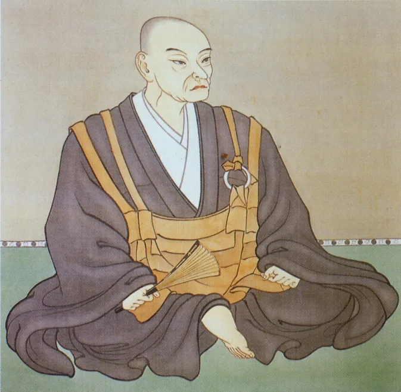

北条早雲戦国編 其の一
戦国時代の先がけとなった武将・北条早雲（ほうじょうそううん）です。
生涯の要点
- 生きている間は「北条」を名乗っていません。名乗りは伊勢新九郎、出家してからは早雲庵宗瑞（そううんあんそうずい）
- 「北条」に改めたのは息子の氏綱（うじつな）で、伊豆の地名にちなむとされます
- 1493年ごろ伊豆に攻め入り、堀越公方（ほりごえくぼう）の足利茶々丸を倒しました
- 素浪人から成り上がったと言われてきましたが、室町幕府に仕えた伊勢氏の一族とする見方が有力です（出自には諸説あります）
- 大森氏の小田原城を奪い、北条氏は五代・約100年にわたって小田原を拠点にしました
- 箱根湯本の早雲寺は、早雲の遺言により氏綱が1521年に建てた寺と伝わります
よくある疑問
「北条早雲」は本人が名乗った名前？
いいえ。生きている間は「北条」を名乗っていません。名乗りは伊勢新九郎、出家してからは早雲庵宗瑞。「北条」に改めたのは息子の氏綱です。
素浪人から成り上がったの？
そう言われてきましたが、室町幕府に仕えた伊勢氏の一族とする見方が有力です（出自には諸説あります）。

北条早雲像（小田原城天守閣所蔵）
60秒で見る
出典と画像
参考：小田原市教育委員会「史跡小田原城跡保存活用計画」ほか
肖像：北条早雲像（小田原城天守閣所蔵）／Wikimedia Commons／パブリックドメイン
写真：韮山城跡 撮影 Abasaa／Wikimedia Commons／パブリックドメイン
写真：小田原城天守（昭和の再建） 撮影 monado／Wikimedia Commons／CC BY-SA 2.5（https://creativecommons.org/licenses/by-sa/2.5/）を縦長に配置して使用
写真：早雲寺 惣門 撮影 Suikotei／Wikimedia Commons／CC BY 4.0（https://creativecommons.org/licenses/by/4.0/）を縦長に配置して使用
動画のナレーション：VOICEVOX:青山龍星